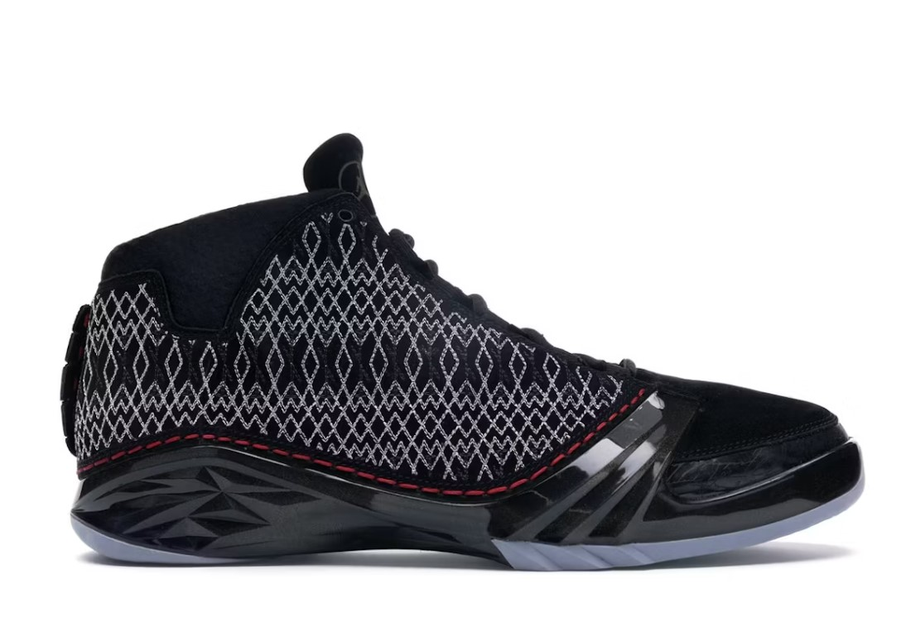

歷史經典AIR JORDAN
Air Jordan 1 (1985年)
text-align: left;">設計師: Peter Moore
特色:這是邁克爾·喬丹的第一款簽名鞋。AJ1因違反了NBA的統一著裝規定，被罰款每場5000美元。這一事件使得AJ1成為經典，並增強了它的市場吸引力。
Air Jordan 2 (1986年)
Air Jordan 2 (1986年) 設計師: Bruce Kilgore 特色: 首次使用意大利皮革，追求奢華感。這雙鞋並不受喬丹本人的青睞，但它開創了使用高端材料的先例。
Air Jordan 3 (1988年)
設計師: Tinker Hatfield 特色: 第一款出現「Jumpman」標誌的Air Jordan鞋款。Tinker Hatfield的設計拯救了Jordan與Nike之間的合作關係，也讓Air Jordan系列達到新的高度。
Air Jordan 4 (1989年)
設計師: Tinker Hatfield 特色: 這雙鞋的技術支撐更強，增加了腳踝的穩定性。它還在《黑潮》中被Spike Lee推廣，成為街頭文化的重要象徵。
Air Jordan 5 (1990年)
設計師: Tinker Hatfield 特色: 靈感來自戰鬥機設計，配有透明橡膠外底，並首次引入了3M反光材料。
Air Jordan 6 (1991年)
設計師: Tinker Hatfield 特色: 喬丹在這雙鞋中贏得了他的第一個NBA總冠軍，鞋的設計在舒適性和支撐性上做了重大改進。
Air Jordan 7 (1992年)
設計師: Tinker Hatfield 特色: 受到了非洲部落藝術的啟發，設計更具動感。AJ7也是喬丹在1992年巴塞隆納奧運會「夢之隊」中的鞋款。
Air Jordan 8 (1993年)
設計師: Tinker Hatfield 特色: 增加了交叉腳帶設計，提供更好的支撐。這雙鞋的設計厚重，更強調防護性。
Air Jordan 9 (1994年)
設計師: Tinker Hatfield 特色: 喬丹在1993年第一次退役後發售，象徵著喬丹在全球籃球的影響力。
Air Jordan 10 (1995年)
設計師: Tinker Hatfield 特色: 這雙鞋以簡約風格為主，鞋底刻有喬丹職業生涯的重要成就。它是喬丹從棒球回到籃球後第一雙穿的Air Jordan。
Air Jordan 11 (1996年)
設計師: Tinker Hatfield 特色: 這是喬丹自己最喜歡的一款，因為其漆皮設計與高科技運動鞋技術的結合，並且他穿著這雙鞋贏得了第72勝的歷史性賽季。
Air Jordan 12 (1997年)
設計師: Tinker Hatfield 特色: 靈感來自日本武士盔甲，具備高支撐性和耐用性。這雙鞋喬丹在1997年「流感之戰」中穿著，被認為是AJ歷史中最具代表性的時刻之一。
Air Jordan 13 (1998年)
設計師: Tinker Hatfield 特色: 這雙鞋的設計靈感來自美洲豹，表現出 MJ 的迅捷和靈敏，並包含了具有標誌性的「貓眼」全息圖。其具備 Zoom Air 緩震和碳纖維支撐
Air Jordan 14 (1999年)
設計師: Tinker Hatfield 特色: 設計靈感來自法拉利跑車，具流線型設計，並且在 1998 年的總冠軍賽中助 MJ 完成「最後一投」
Air Jordan 15 (2000年)
設計師: Tinker Hatfield 特色: 這款鞋的靈感來自X-15超音速飛機，帶有獨特的高科技設計。
Air Jordan 16 (2001年)
設計師: Wilson Smith III 特色:加入了可拆式的皮革覆蓋和流線型設計，兼具正式與運動風格，象徵多用途性
Air Jordan 17 (2002年)
設計師: Wilson Smith III 特色:靈感源於爵士音樂，配有金屬裝飾和 USB 儲存裝置。此款在鞋側加裝金屬孔，增強通風效果
Air Jordan 18 (2003年)
設計師: Tate Kuerbis 特色: 靈感來自於賽車運動和義大利豪華轎車的皮革設計，採用了翻毛皮材質和特殊的鞋底，以提供更好的摩擦力和舒適性。鞋帶罩設計讓整體造型更簡約奢華
Air Jordan 19 (2004年)
設計師: Tate Kuerbis 特色:靈感源於非洲黑曼巴蛇，鞋面使用輕量化的網眼結構，具有極佳的透氣性，鞋身也設計了加強的足部支撐，適合激烈的籃球運動
Air Jordan 20 (2005年)
設計師: Tinker Hatfield 特色:結合了部落紋理和科技感，鞋身以激光雕刻的花紋作為裝飾，並引入了 IPS（獨立懸浮技術）來加強支撐和緩震功能，讓鞋款充滿個性
Air Jordan 21 (2006年)
設計師: D'Wayne Edwards 特色:這款鞋設計高端奢華，使用麂皮和皮革製作，具備可調節的雙密度鞋墊，並提供更個性化的穿著體驗，緩震系統讓鞋款適合激烈運動
Air Jordan 22 (2007年)
設計師: D'Wayne Edwards 特色:靈感來自戰鬥機的設計，加入了碳纖維結構來增強穩定性，並使用了獨特的「浮動」緩震技術，以適應籃球場上的高強度需求

Air Jordan 23 (2008年)
設計師: Tinker Hatfield 特色: 此款向 Jordan 本人致敬，採用了特殊針織圖案和環保製程。鞋身上印有 Jordan 簽名，代表其職業生涯的頂峰
Air Jordan 24 (2009年)
這款鞋以簡約的設計提升鞋款流線性，適合快速跑動。鞋底採用獨特的耐磨材料，適合籃球場上的多種運動需求
Air Jordan 25 (2010年)
設計師:Tinker Hatfield 與以往不同，Air Jordan 25不再以年份編號命名此代設計出現透明窗格，象徵 Jordan 的「透視力」，提高側面支撐並提供良好透氣性，是該系列的亮點之一
Air Jordan 26 (2011年)
這是首款提供兩種緩震系統可供更換的鞋款，玩家可依場地和需求更換鞋底，適合不同打法和舒適性需求
Air Jordan 27 (2012年)
採用多層緩震選項的設計，能夠適應各類運動需求，並提供不同組合的支撐與靈活性，進一步提升場上表現
Air Jordan 28 (2013年)
設計師:Tinker Hatfield 具備高筒拉鍊設計，特徵為 FlightPlate 技術，能增加能量回饋，進一步提升爆發力和穩定性，是輕量設計的里程碑
Air Jordan 29 (2014年)
首款全編織鞋面，具有輕量化的設計和強透氣性，增加靈活性和舒適度，成為當時的科技突破
Air Jordan 30 (2016年)
設計師:Tinker Hatfield 與 Mark Smith 此代融合過去元素，以「宇宙」為靈感，外觀採用星際圖案設計，鞋面進行強化以提升支撐和穩定性
Air Jordan 31 (2016年)
設計師: Tate Kuerbis 特色: 這雙鞋的設計靈感來自於最初的Air Jordan 1，將復古風格與現代技術結合。它首次將Jumpman和Nike Swoosh標誌同時放在鞋款上，配有FlightSpeed技術，增強了鞋子的反應性。
Air Jordan 32 (2017年)
設計師: Tate Kuerbis 特色: 以Air Jordan 2為設計靈感，結合現代的編織技術（Flyknit），提升了鞋子的透氣性和舒適度。FlightSpeed技術依然是核心，並強調鞋底的回彈性。
Air Jordan 33 (2018年)
設計師: Tate Kuerbis 特色: Air Jordan 33採用了全新的FastFit無鞋帶系統，玩家只需輕輕拉動鞋面的繫帶，就能快速穿戴與調整。這款鞋強調方便性和科技感，同時保持了籃球運動中所需的穩定性與舒適性。
Air Jordan 34 (2019年)
設計師: Tate Kuerbis 特色: 這是一款極其輕盈的鞋，設計極簡化。它採用了Eclipse Plate技術，這是一個中底的設計，提供額外的支撐和減少重量。AJ34的設計目標是讓鞋子如同延伸的雙腳，提供更好的靈活性和敏捷性。
Air Jordan 35 (2020年)
設計師: Tate Kuerbis 特色: AJ35在Eclipse Plate 2.0技術的基礎上進行了改進，強調中底的支撐力和反應速度。這款鞋的鞋面結構更具科技感，並引入了最新的Zoom Air氣墊技術來提供更強的回彈性。
Air Jordan 36 (2021年)
設計師: Tate Kuerbis 特色: 這款鞋繼續進化，將輕量化推向極致。使用了Jacquard Leno-Weave編織技術，使鞋身更加透氣、耐用。Zoom Air氣墊系統提供了極強的回彈性，Eclipse Plate 3.0讓籃球運動員在場上能夠更靈活地移動。
Air Jordan 37 (2022年)
設計師: Tate Kuerbis 特色: Air Jordan 37 的設計靈感來自飛行和跳躍動作，採用全掌Zoom Air氣墊和Formula 23泡棉技術，強調鞋子的舒適度與跳躍力。這款鞋的材質更輕盈且耐用，讓運動員在場上有更好的靈活性和支撐力。
Air Jordan 38 (2023年)
設計師: Tate Kuerbis 特色: 這款鞋的設計專注於「高效動能轉換」的概念，幫助運動員在運動時將地面能量轉化為動力。AJ38使用了進化版的Formula 23泡棉技術以及新的結構材料，進一步提升舒適度、穩定性和反應速度。鞋底設計也經過改進，以提供更強的抓地力，適應現代籃球的高強度比賽需求。
Travis Scott x Fragment x Air Jordan 1 High
Travis Scott x Fragment x Jordan 三方品牌合作重新設計了 AJ1 High的輪廓。這雙 AJ1 的鞋面由白色皮革材料製成，這與軍藍色裝飾的腳踝護翼、鞋跟、鞋頭和橡膠外鞋底形成鮮明對比。標誌性的 Travis Scott 倒鉤標誌被添加到側面，同時採用黑色色調。這雙鞋的鞋舌上還有“Cactus Jack”字樣和“Nike Air”字樣。運動鞋的後部左側鞋跟上有一個扭曲的表情符號，而右側則有 Fragment 的 Hiroshi Fujiwara 標誌性的閃電圖案。